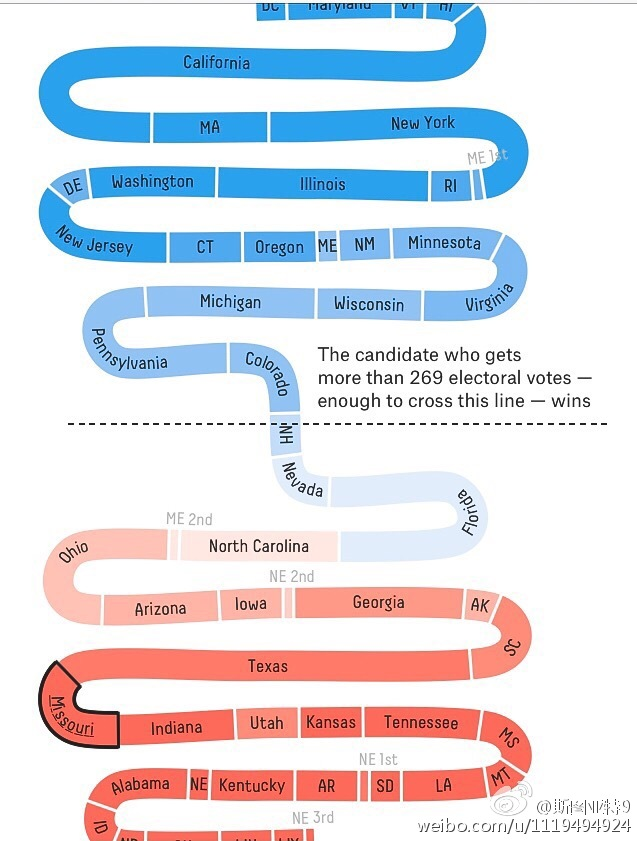
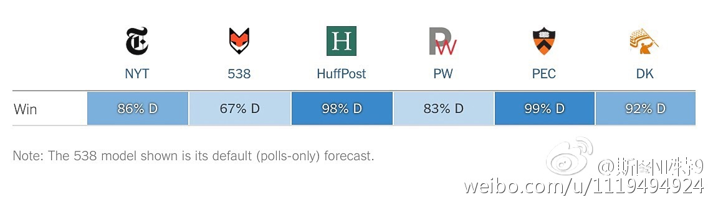

美国大选选情激烈。佛罗里达、内华达、北卡三个州几乎是50:50。虽然这三个州对特朗普都是必拿对希拉里理论上可以输，但一个全国性的选情小移动则会让三个州全飘红。而希拉里会在新罕布什尔命悬一线。这时候两个阵营着重在哪个州拉票就很有意思了。比如希拉里，是应该攻三个摇摆州之一，还是守浅蓝？ 
向 @usuario 学习，今年一直在跟进美国大选的民调以及结果预测。最著名的538网站给出的希拉里当选机率只有2/3，远低于其他预测。但我认为只有538的方法论是正确的。538认为各州的支持率通常会跟着全美的支持率一起移动，并不是独立事件。其他预测则把各州的不确定性当作了独立事件，结论是荒谬的。 
英国法院裁定开启退欧条款需要议会授权。首相将上诉最高法院，估计12月做出裁决（神奇的是之后还有可能上诉到欧盟法庭）。工党说他们会遵从民意，不会试图在议会否决退欧，只会利用这个机会与政府谈判条件。本来以为英国这大戏已经落幕了，结果拍出个续集来……